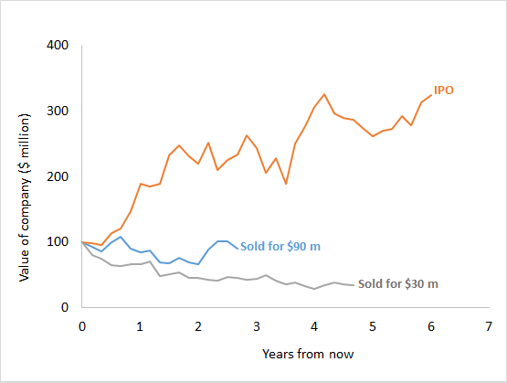
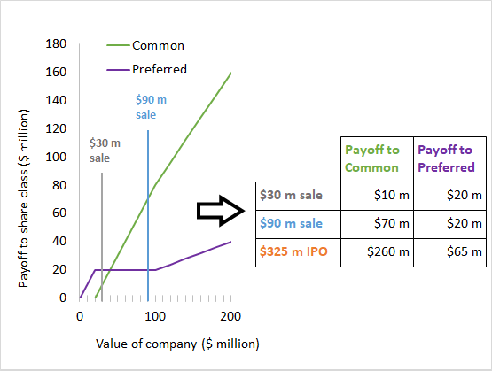

Model outputs
Other considerations
This calculator values shares from the perspective of a diversified investor. The value of these shares to YOU may be substantially lower.
Can you tolerate risk?
Startup options are very risky, as illustrated by the dice roll example above. The more money you have and the more secure your job is, the better you are able to deal with that risk. Beyond that, some people are more worried about risk than others.
The less you are able to deal with risk, the less your shares are worth to you.
Are you impatient?
If you have high interest debt or need to buy a house, you may prioritize money today. That reduces the value of payoffs that will come years from now.
The more you need money today or in a few years, the less your shares are worth.
Will you quit?
If you leave a startup, you lose your unvested ownership. Vested ownership may also lose value as you may have to exercise options (creating tax and cash-flow issues) or be forced to sell them to the company.
The more likely you are to leave the company early, the less your shares are worth.
Will you need to sell?
Selling shares in startups can be hard. First, startups have a variety of contractual rights that make it hard for employees to sell their shares to outsiders. Second, buyers may know less about the startup than employees will be worried the company is a lemon - if the company was great, why would you sell? Third, the platforms that facilitate share sales, such as EquityZen and SharesPost charge a sizeable commission.
If you need to sell ownership in startup, you may get less than the fair value.
What is your tax situation?
Receiving, exercising, or selling stock options or shares can create complicated tax situations. You should consult with a tax advisor in order to avoid an unwanted tax surprise. Your tax bill may end up being between 15% to 50% of the proceeds.
Plan for taxes and talk to a tax advisor.
Are the model assumptions correct?
This model uses parameter assumptions that are appropriate for the average VC-backed company. These assumptions were designed to be appropriate for the typical such company. If your company has definite plans to go public in the next year, it is likely no longer typical (you may want to reduce the "Avg. time until exit" to 2 years in such a case). Similarly, if your company has just had a recap or significant down round, it is not typical. In either case, these special considerations prevent our off-the-shelf model from reflecting your company's reality unless you customize the parameter assumptions.
If your company is atypical, the values produced may be incorrect.
How does it work?
Step 1 The program guesses the value of the company. Based on that value, it projects out many potential exits.
Step 2 For each possible exit, the program finds the payoff to each class of share.
Step 3 Based on these exits, the program values each security.
Step 4 The program sets the value of the company so that the most recent VC round is fairly priced. That company value is then divided between options, common shares, and preferred shares.
Refer to our paper Squaring Venture Capital Valuations with Reality for full details of the valuation process.
About the authors

WILL GORNALL
Assistant Professor of Finance, University of British Columbia
will.gornall@sauder.ubc.ca
willgornall.com
Will Gornall is an Assistant Professor of Finance at the University of British Columbia. He is an expert on venture
capital and innovation financing.

ILYA A. STREBULAEV
The David S. Lobel Professor of Private Equity, Graduate School of Business, Stanford University
istrebulaev@stanford.edu
https://ilyas1.people.stanford.edu/
Ilya A. Strebulaev is the David S. Lobel Professor of Private Equity and Professor of Finance at the Stanford Graduate
School of Business, and a Research Associate at the National Bureau of Economic Research. He is an expert in corporate finance,
venture capital, innovation financing, and financial decision-making. He is the faculty director of the Stanford GSB Venture
Capital Initiative.